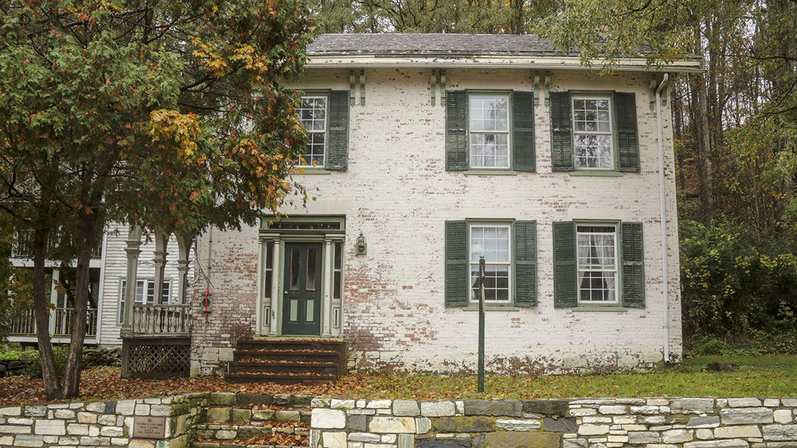
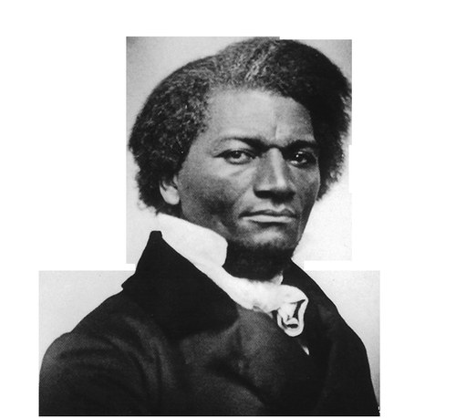
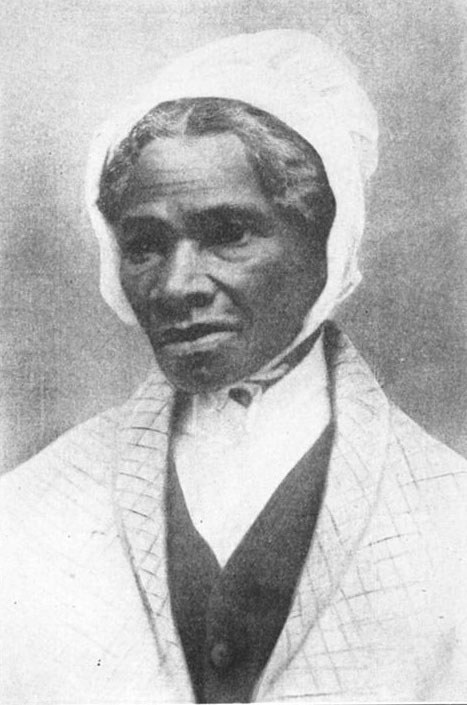
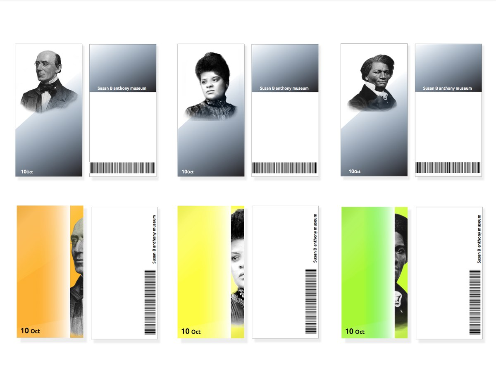
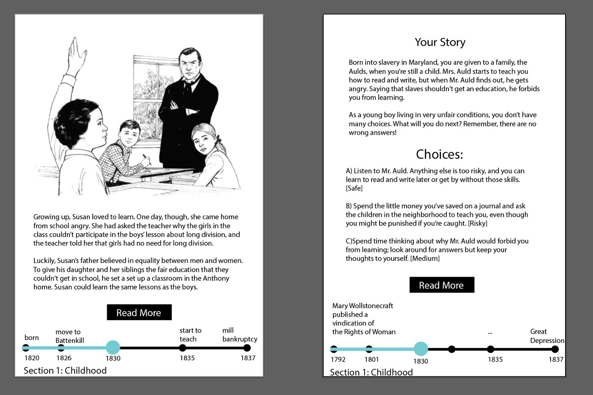
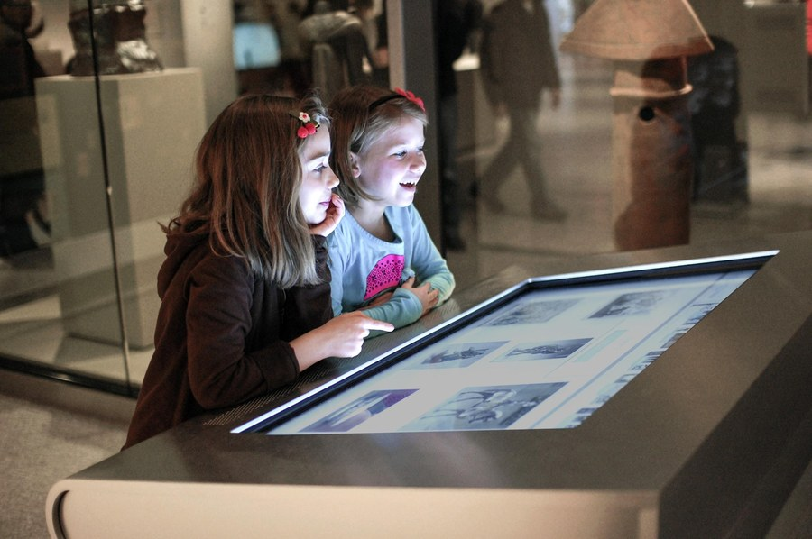
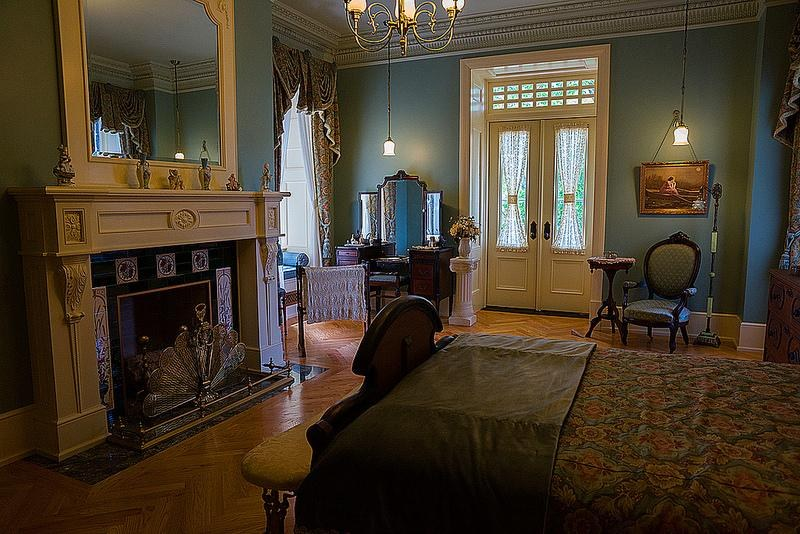
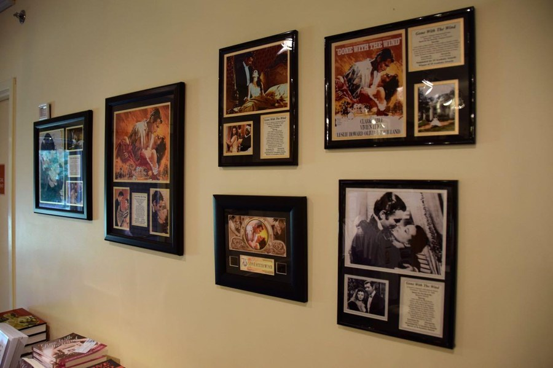

Susan B. Anthony's House
A concept for a museum in the suffragist's childhood home, where visitors don't just read her history; they live it, through the eyes of someone who was there.

Overview
A museum set in Susan B. Anthony's childhood home in Battenville, New York, telling her life through the lens of "living in history."
The idea: by stepping into the history around Anthony, young visitors come to see the history they are living in right now, and their own power to shape it. So the museum doesn't just narrate a life. It casts each visitor inside one.
The framework
Three devices carry the experience through the house.
Reproduction furniture
Five period rooms immerse visitors in the era and carry Anthony's biography, decade by decade.
Character cards
A card, drawn at random on arrival, casts each visitor as a real person who lived alongside Anthony.
Interactive screens
Paired screens tell Anthony's story and the character's at once, then hand the visitor a choice.
How a visit works
One journey, from the front door to a card you carry out.
Enter the house
Draw a character card at random.
Move through five period rooms
One era of Anthony's life at a time.
Susan's story
A moment from her life, on a timeline of the era.
Your character's story
The same moment, lived from their side.
You decide what happens next
No wrong answers, just consequences.
At the final screen, the question turns to you
Not "what would you choose?" but "what do you care about, now?" You type your answer in.
Your card prints with your character's fate
Take it home, share it, or email it to yourself.
Inside the house: five rooms, five eras
Each room opens with her life in that period, then 4–5 stories paired with the visitor's character.
Childhood
Family shapes Susan B.
- Her father sets up a family school at home
- Parlor discussion becomes a family tradition
- Her first question about women's rights
- Teaching at her father's school, then the Female Seminary
- The family loses everything in an economic depression
Early career
Growing up and early activism
- Her sister's marriage prompts her to reflect on marriage itself
- Setting aside some of her Quaker upbringing
- Her first public speech
- A women's-rights conference
Main career
Challenges and victories
- Meeting Elizabeth Cady Stanton
- The New York Women's Temperance Society
- A statewide lecture tour, and a search for self-identity
- First victory: New York grants married women the right to own property and run their own businesses
- A failed lecture tour
Civil War
A little progress
- The war begins
- The revolution
- Being arrested for voting
- A new victory
Late life
"Failure is impossible"
- Her friendship with Stanton, and the first volume of their History of Woman Suffrage (1881)
- A trip to Europe
- Her later years
- "Failure is impossible": her last public words
- After her death
The characters
On arrival you draw one of these at random, and spend the visit seeing Anthony's world through their eyes. Your choices decide how their story ends.
William Lloyd Garrison
b. 1805Abolitionist and a founder of the American Anti-Slavery Society, who also championed women's suffrage.
Ida B. Wells
b. 1862Born into slavery; became a pioneering investigative journalist, anti-lynching crusader, and suffragist.

Frederick Douglass
b. ~1818Escaped slavery to become the era's foremost abolitionist orator, and a vocal ally for women's suffrage.

Sojourner Truth
b. ~1797Escaped slavery; became an abolitionist and women's-rights preacher, famous for "Ain't I a Woman?"

Two stories, side by side
In each room, a story plays on two screens at once: Anthony's life on one, your character's parallel experience on the other, each against a timeline of the era. Then a choice.

What I looked at
Precedents for the feel, the structure, and the interaction.
Aesthetics: period interiors


Structure: biographical house museums

Interaction: the model for the cards